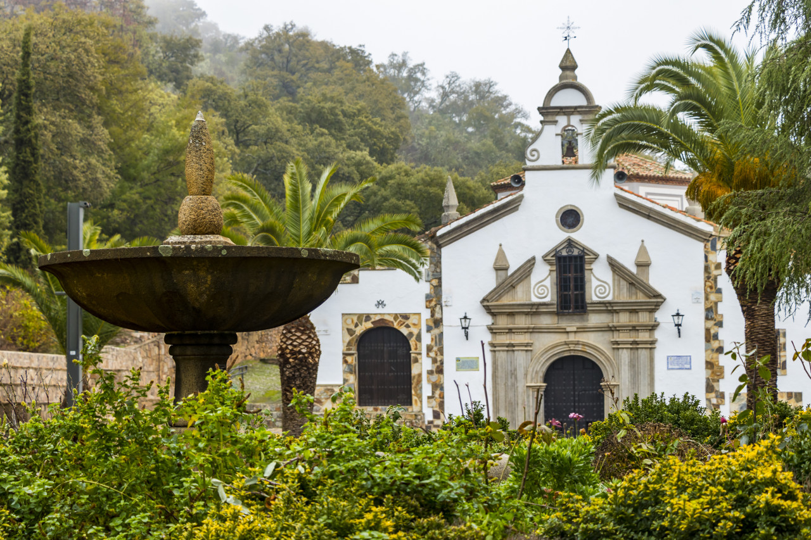
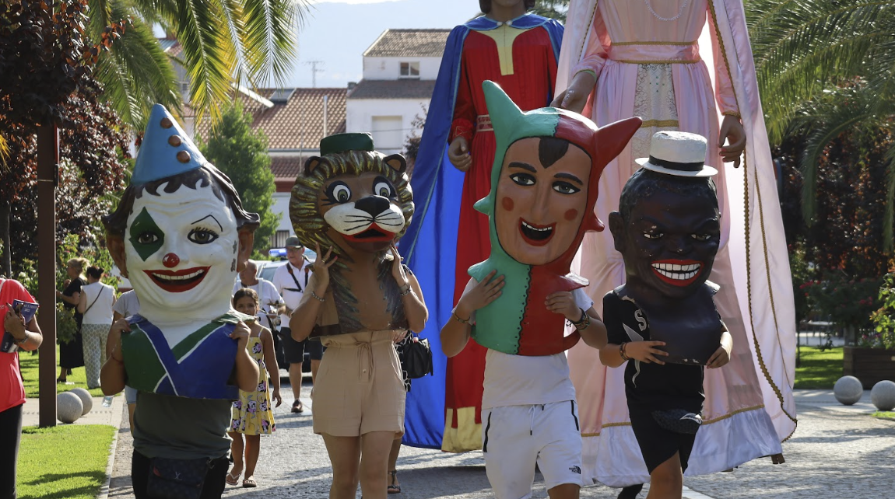
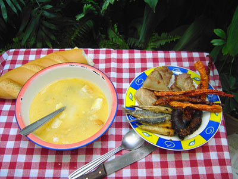
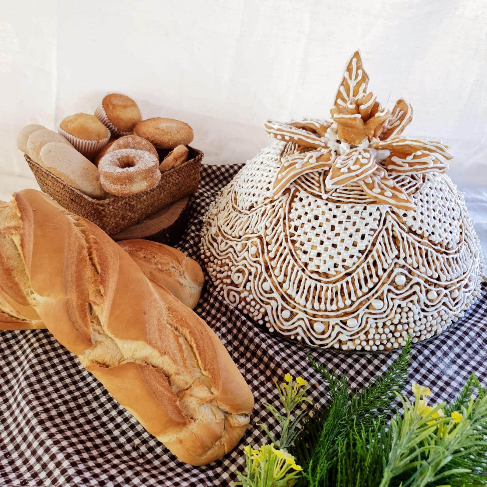
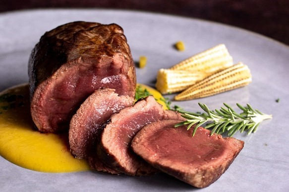
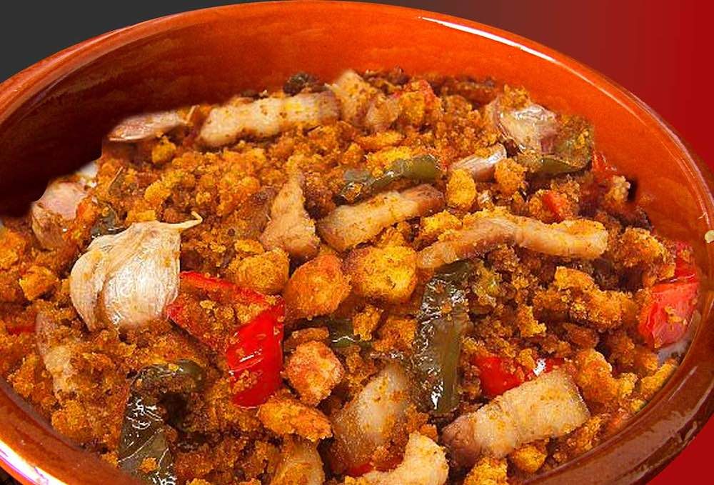
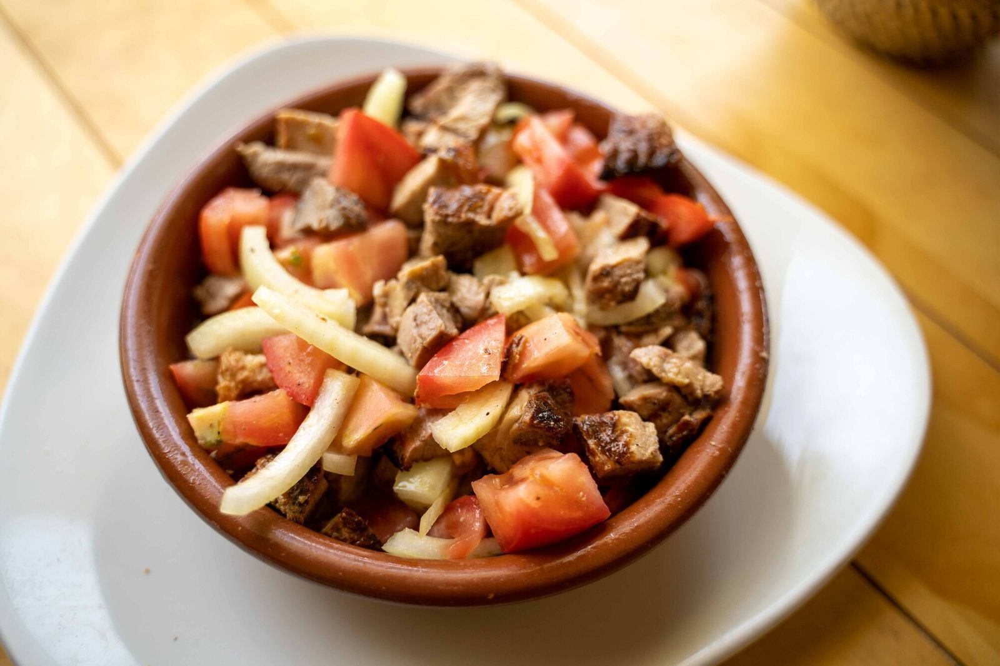

Patrimonio

Convento de la Purísima Concepción
Un remanso de paz y espiritualidad en el corazón de la villa.

Puente Viejo
Antiguo paso sobre el arroyo Pelochejo que une Herrera con Castilblanco y los poblados del embalse.

Castillo de Herrera del Duque
Imponente fortaleza medieval que domina el horizonte de La Siberia.

Iglesia Parroquial San Juan Bautista
Un templo majestuoso que combina estilos gótico y renacentista.

Ermita de la Virgen de Consolación
Santuario de gran devoción popular situado en un entorno natural.

Plaza de España
El corazón latiente de Herrera, famosa por su fuente y sus soportales.

Casa de la Conca
Testigo de piedra del pasado noble y próspero de la villa.

Ermita de la Virgen del Espino
Un santuario de paz situado en un entorno privilegiado con vistas panorámicas.
Fiestas

Jubileo
Una de las celebraciones religiosas y populares cargadas de historia.

Feria de Agosto
La gran fiesta del verano con música, baile y diversión para todos.

Feria Ganadera
Un homenaje a nuestras raíces agrícolas y ganaderas.

San Antón
La bendición de los animales y las tradicionales hogueras.
Patrimonio Natural


Gastronomía

Gazpacho de Invierno
Una variante tibia y reconfortante del clásico ajoblanco.

La Chaquetía
El festín de frutos secos y dulces en el día de Todos los Santos.

Canelilla
Es un dulce típico que se suele regalar en las bodas.

La Caldereta
El guiso de cordero más emblemático de la cocina extremeña.

Carne de Caza
El sabor salvaje de los montes de La Siberia en tu mesa.

Migas Extremeñas
El plato pastoril por excelencia, sencillo y delicioso.

Escarapuche
Plato típico veraniego a base de peces de río o carne de cerdo.